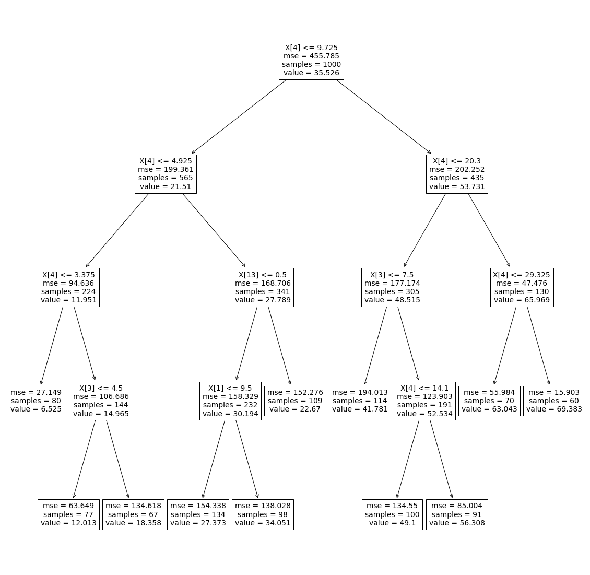
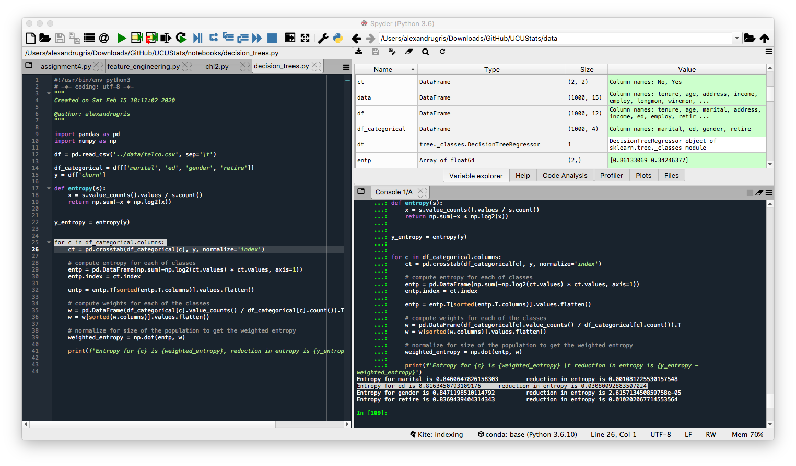
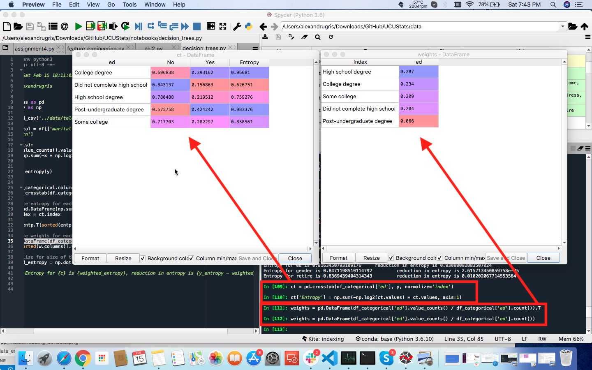
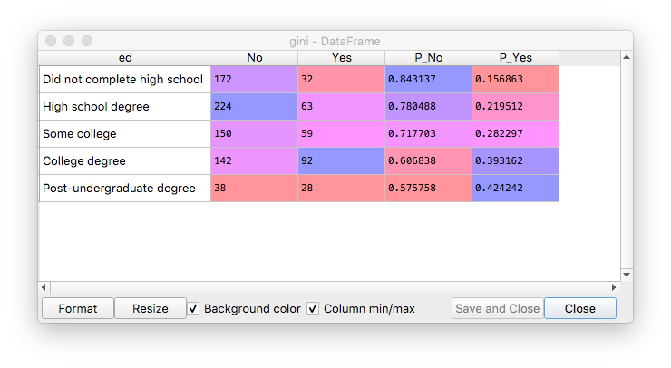
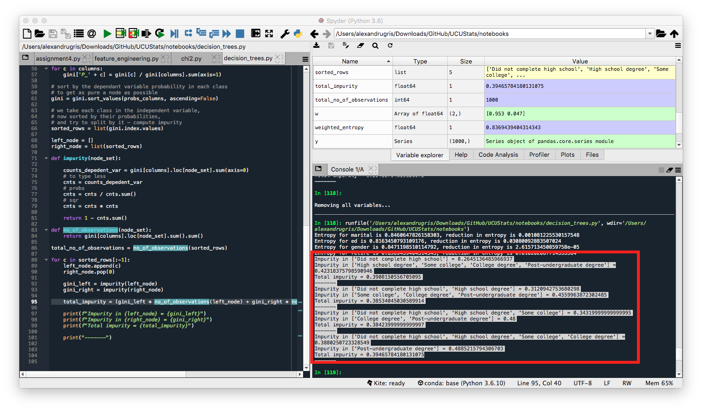
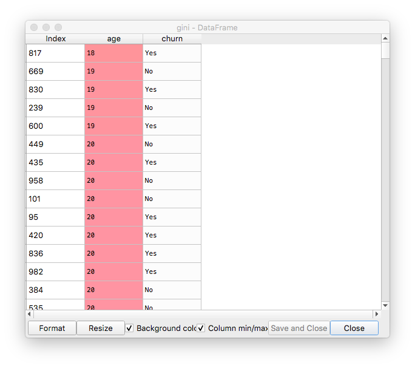
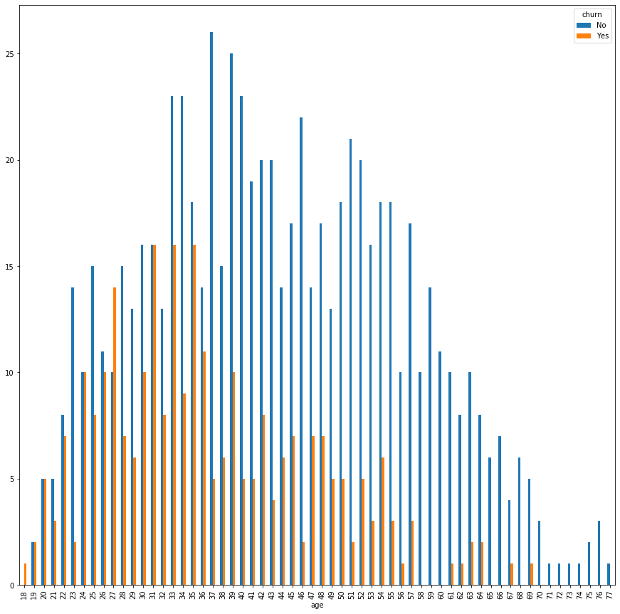
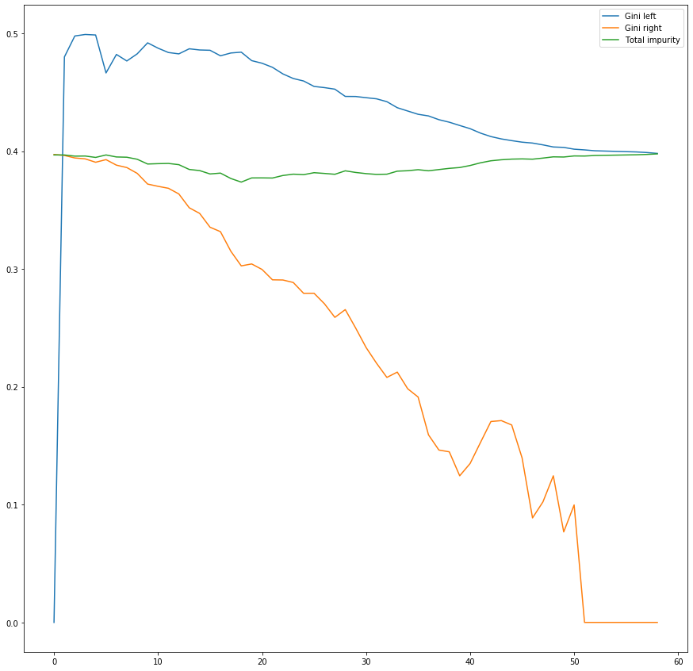

Decision Trees
A short introduction to decision trees (CART). Decision trees are a supervised machine learning technique used for classification and regression problems. Since the launch of XGBoost, it has been the preferred way of tackling problems at machine learning competitions and not only, because of easy setup, learning speed, straightforward tuning parameters, easy to reason about results and, above all, very good results. Arguably, with current implementations, decision trees outperform many of the other machine learning techniques.
Classification and Prediction
As with every other supervised learning techniques, the input to the algorithm in its learning phase is a set of predictors, Xij, and a set of predicted variables Yj, with i between 0 and K, the features, and j between 0 and N, the number of points in the training set.
If the problem is one of classification the Yj labels, with Yj belonging to a finite set of labels, L, with size(L) << N. If the problem is a regression, then Yj are numeric values.
The output is a decision tree which, for a new input vector, X' will predict its class (or the regressed value), Y'. If the problem is one of classification, the label predicted will be the label obtained by the majority vote from the points contained in one of its leafs. If the problem is one of regression, the value predicted will be the average values Yj of the points contained in the un-split set at one of its leafs.
Principles
A decision tree is, as the name implies, a tree. Since in the large majority of the cases this tree is binary, we will consider only the binary case in this post.
When parsing the tree, at every node a decision is taken on whether to go right and or left. Each leaf represents the decision to which class that particular path belongs to. In the case of regression trees, it represents the predicted value for the specified set of parameters.
The algorithm works by splitting the nodes based on the value of one of its predictor variables. The algorithm stops usually after some conditions, like the depth of the tree, or the number of leafs, or the number of nodes in a leaf has been been reached, or when all the elements in the leaf belong to a single class. Obviously, the decision trees are very prone either to overfitting by splitting too much, or to underfitting, by taking the decision to stop splitting too early.
These model parameters, which influence when to stop splitting, are tackled by hyperparameter tuning methods, which train trees with various parameters and then pick the most successful ones.
The bias to given by the training set selection (bagging) or feature choices are tackled by ensemble methods, like random forest or gradient boosted trees, which build several trees based on the input data to query from and then use voting to select the most accurate results.
Below is a very basic example of how to build such a decision tree, together with its visualization:
from sklearn.tree import DecisionTreeRegressor
from sklearn.tree import plot_tree
dt = DecisionTreeRegressor(max_depth=4, min_samples_leaf=60, min_samples_split=60)
dt.fit(X, y)
plt.figure(figsize=(20, 20))
plot_tree(dt)
plt.show()

The tree above is a regression tree, built with numeric features.
X[n]- the feature based on which the split has been mademse- mean squared error in the nodesamples- number of samples contained in the node before splitting the node furthervalue- the mean value predicted for the node
In our case, we can see the Sum of Squared Error (SSE) is improved with every split. Taking the first node, for instance, we observe:
- First step:
MSE = 455 => SSE_before_the_split = 455 * 1000 - After split we have:
SSE_after_the_split = 199 * 565 + 202 * 435 = 200305 < SSE_before_the_split
With SSE = sum((corresponding_yi_from_partition_0 - y_mean_0)^2 ) + sum(corresponding_yi_from_partition_1 - y_mean_1)^2) where _0 and _1 are the two partitions.
A little bit of terminology
Here is a little bit of terminology associated with the decision trees:
-
Classification tree: a tree which outputs which class the input vector belongs to. It does so by majority selection from the selected leaf.
-
Regression tree: a tree which outputs the predicted value for an input vector. It does so by averaging the values from the selected leaf.
-
Random forest: a way of improving the predicted values for CARTs by training a number of independent trees and averaging or voting from their outputs. This can be achieved by selecting a different set of features, sampling from the training data or training with the model different hyperparameters.
-
Bagging: a way of building a tree from the forest by randomly sampling with replacement from the training data.
-
Gradient boosting: a way of building subsequent trees by weighting down the points for which the tree classified correctly and weighting up the misclassified points. In the end result, trees which performed poorly in classification will have a lower voting weight than trees that performed well.
-
Pruning: the opposite of splitting, removing the nodes that don't bring enough information, to avoid overfitting.
Building the tree
Building the decision tree is a recursive process. At each step a feature is selected and a value from the selected feature based on which to do the split. The selection is made such that the highest information gain is attained, meaning each group as as homogenous as possible.
Nodes are split based on their “impurity”. Impurity is a measure of how badly the observations at a given node fit the model.
For a regression tree the impurity is be measured by the residual sum of squares within that node - as we've seen in the example above. For a classification tree, there are various ways of measuring the impurity, such as the misclassification error, the Gini Impurity, and the Entropy.
For building the tree there are 3 general cases, each building on each other:
- All independent (
X) and dependent (y) variables are categorical. - There is a mix of categorical and continuous independent variables (
X) but the dependent variable is categorical (y). - The dependent variable is continuous (
y).
All Independent and Dependent Variables Are Categorical
The algorithm goes as follows:
- Split the dataset in 3 parts: training, parameter-tuning and test
- Compute the uncertainty at the root node (the node we want to split)
- Find the feature that provides the highest uncertainty reduction and decide to split by this feature
- Find the splitting point
- Repeat until each node is pure or until the accuracy computed on the parameter-tuning dataset does not improve anymore.
We are going to analyze the following dataset, where the predicted variable is churn. The first step is to select which feature to split by:
import pandas as pd
df = pd.read_csv('../data/telco.csv', sep='\t')
df_categorical = df[['marital', 'ed', 'gender', 'retire']]
y = df['churn']
Entropy (uncertainty) at the root node. By definition, entropy = sum(-p*log2(p)) where p is the probability of a class to appear in the given set.
import numpy as np
def entropy(s):
x = s.value_counts().values / s.count()
return np.sum(-x * np.log2(x))
y_entropy = entropy(y)
Calculating the entropy reduction if we split by each feature:
for c in df_categorical.columns:
# compute the counts for each category mapped to the predicted variable
# normalize per line to get the probability
ct = pd.crosstab(df_categorical[c], y, normalize='index')
# compute entropy for each of classes
entp = pd.DataFrame(np.sum(-np.log2(ct.values) * ct.values, axis=1))
entp.index = ct.index
entp = entp.T[sorted(entp.T.columns)].values.flatten()
# compute weights for each of the classes
w = pd.DataFrame(df_categorical[c].value_counts() / df_categorical[c].count()).T
w = w[sorted(w.columns)].values.flatten()
# normalize for size of the population to get the weighted entropy
weighted_entropy = np.dot(entp, w)
print(f'Entropy for {c} is {weighted_entropy}, reduction in entropy is {y_entropy - weighted_entropy}')
Given the results below, we would choose feature ed for split as it gives the highest entropy decrease.

Broken down into individual steps, for the variable ed the intermediate results from each step are shown in the image below:

The next step is to find the right splitting point. We are going to use a measure called Gini Impurity to split the node in two partitions, each as pure a possible.
We define the Gini Impurity as follows:
gini impurity = 1 - sum(p_i^2), where p_i is the probability associated with each class
For example, a group made of 50% males and 50% females would have a Gini Impurity of 0.5, which is the highest possible in this case. A group made only of males would have a Gini Impurity of 0, which makes it a pure node. In our case, the probabilities are the counts for the elements of each class divided by the total number of elements in the node.
Let's do just that.
gini = pd.DataFrame(df_categorical['ed'])
gini['churn'] = y
gini = pd.crosstab(gini['ed'], gini['churn'])
columns = list(gini.columns)
probs_columns = ['P_' + c for c in columns]
# compute the probability for each class
for c in columns:
gini['P_' + c] = gini[c] / gini[columns].sum(axis=1)
# sort by the dependant variable probability in each class
# to get as pure a node as possible
gini = gini.sort_values(probs_columns, ascending=False)
# we take each class in the independent variable,
# now sorted by their probabilities,
# and split by it to compute impurity
sorted_rows = list(gini.index.values)
left_node = []
right_node = list(sorted_rows)
def impurity(node_set):
counts_depedent_var = gini[columns].loc[node_set].sum(axis=0)
# to type less
cnts = counts_depedent_var
# probs
cnts = cnts / cnts.sum()
# sqr
cnts = cnts * cnts
return 1 - cnts.sum()
def no_of_observations(node_set):
return gini[columns].loc[node_set].sum().sum()
total_no_of_observations = no_of_observations(sorted_rows)
for c in sorted_rows[:-1]:
left_node.append(c)
right_node.pop(0)
# simply follows the 1 - sum(p_i^2) formula
gini_left = impurity(left_node)
gini_right = impurity(right_node)
# computing the weighted impurity,
# with the number of observations in each node
total_impurity = (gini_left * no_of_observations(left_node) + gini_right * no_of_observations(right_node)) / total_no_of_observations
print(f"Impurity in {left_node} = {gini_left}")
print(f"Impurity in {right_node} = {gini_right}")
print(f"Total impurity = {total_impurity}")
The combination that has the least overall weighted impurity will be chosen for the split. In our case, the combination that will split by education is this:
Impurity in ['Did not complete high school', 'High school degree', 'Some college'] = 0.34319999999999995
Impurity in ['College degree', 'Post-undergraduate degree'] = 0.48
Total impurity = 0.38423999999999997
Let's observe a little bit the data in between steps.
The gini dataframe, after initial setup and sorting by probabilities:

Impurity calculated in the loop, for each combination of possible values in the left-right nodes:

Gini Impurity for Continuous Independent Variables
We are starting as follows:
#######################################################
### Gini Impurity for a continuous independent variable
#######################################################
continuous_var = 'age'
dependent_var = 'churn'
df_continuous = df[[continuous_var]]
gini = pd.DataFrame(df_continuous[continuous_var])
gini[dependent_var] = y
gini.sort_values([continuous_var], ascending=True, inplace=True)

In our case, the age looks more like a categorical variable with many classes, but we will treat it as a continuous variable. This is why, in the next step we uniquify it.
# we are using np.unique to deduplicate identical values
# for a purely continuous variable, it might be some sort of bucketing to
# reduce the amount of gini calculations we perform
sorted_rows = list(np.unique(gini[continuous_var].values))
Now, let's compute the impurity for each value. The impurity will be saved in the df_splits dataframe.
def impurity(subset):
# for this subset, we want to see how many 'yes'es and 'no's we have
counts_depedent_var = subset.groupby(dependent_var).count()
# to type less
cnts = counts_depedent_var
# probs
cnts = cnts / cnts.sum()
# sqr
cnts = cnts * cnts
# return a float instead of a dataframe
return (1 - cnts.sum()).values[0]
df_splits = {
'Split': [],
'Gini left': [],
'Gini right': [],
'Total impurity': []
}
for split_value in sorted_rows[:-1]:
# since we've already sorted, in real production code
# we would have just incremented the counts in a linear fashion
# here we rely on the dataframe functionality and trade performance for less typing
subset_left = gini[gini[continuous_var] <= split_value]
subset_right = gini[gini[continuous_var] > split_value]
gini_left = impurity(subset_left)
gini_right = impurity(subset_right)
len_left = len(subset_left)
len_right = len(subset_right)
len_total = len_left + len_right
total_impurity = (gini_left * len_left + gini_right * len_right) / len_total
print(f"Total impurity for split value of {split_value} = {total_impurity}")
df_splits['Split'].append(split_value)
df_splits['Gini left'].append(gini_left)
df_splits['Gini right'].append(gini_right)
df_splits['Total impurity'].append(total_impurity)
df_splits = pd.DataFrame(df_splits)
Let's investigate a little bit the results now. We'll look at two things:
# counts of age and churn
counts = pd.crosstab(gini['age'], gini['churn'])

and
df_splits[['Gini left', 'Gini right', 'Total impurity']].plot(figsize=(15, 15))

We observe the following:
- The total impurity (weighted sum between the left node impurity and the right node impurity) has a minimum. That is our best splitting point.
```python
df_splits[df_splits['Total impurity'] == df_splits['Total impurity'].min()]
Out[147]:
Split Gini left Gini right Total impurity
18 36 0.484056 0.302626 0.373747
By assessing the first bar chart, we intuitively see that after `36`, the churn seems to decrease.
- The impurity for both the left and the right node tend to decrease, but for the left node impurity decreases slower. This happens because the data set is not balanced and not very well separated, with less 'Yes'es than 'No's.
Now we can compute the entropy for the feature after the split:
```python
def entropy_split(pts):
counts = pd.crosstab(gini[continuous_var], gini[dependent_var])
left = counts[counts.index <= pts]
right = counts[counts.index > pts]
left_y_n = left.sum()
right_y_n = right.sum()
left_cnt = left_y_n.sum()
right_cnt = right_y_n.sum()
left_probs = left_y_n / left_cnt
right_probs = right_y_n / right_cnt
entropy_left = (-left_probs * np.log2(left_probs)).sum()
entropy_right = (-right_probs * np.log2(right_probs)).sum()
return ((entropy_left * left_cnt) + (entropy_right * right_cnt)) / (left_cnt + right_cnt)
entropy_split(36) # entropy for feature if we were to split by it
entropy_split(100) # entropy before the split, 100 means there's no split
entropy_gain = entropy_split(100) - entropy_split(36)
entropy_gain
Out[179]: 0.04303762368425612
Unlike the previous scenario with only categorical variables, if we have continuous variables we have to reverse the tree building algorithm as we cannot compute the information gain for a feature before we find the splitting point. Therefore, we’ll first find out the point of splitting to the left node and right node, if we were to split on each of continuous the variables. Once the left and right nodes for each of the variables are figured, we’ll calculate the information gain obtained by the split and select the feature that gives us the highest information gain. We use that feature and that splitting point as our next step in the tree construction algorithm.
Continuous Dependent Variable - Regression Trees
For this case, we don't have measures such as Gini Impurity or Entropy, as both of them depend on the response variable being categorical. Therefore, we can use the improvement in the Mean Squared Error as a measure of best split.
The algorithm goes as follows.
For each feature,
If the feature is continuous:
- We sort by the independent variable
- For each increment of the independent variable we compute the MSE in the dependent variable
- We select the increment with the highest improvement in the MSE
If the feature is categorical:
- Compute the average response value for each category in the selected feature
- Sort categories in an ascending order by the average response value
- Start with one category in the left node and all the remaining categories in the right node
- Add category by category to the left node and compute the mean squared error for the split
- Select the split with the highest decrease in the mean squared error
After all the steps above are performed for each feature in the feature set, select the (feature, split_point) pair which gives the highest improvement in the MSE and then continue to split the tree recursively.
As we can see, for decision trees we don't do any dummy variable encoding on the categorical dependent variables. We treat them as they are.
Gini Impurity vs Entropy for Classification Trees
In our classification tree examples, we used the Gini impurity for deciding the split within a feature and entropy for feature selection. Most of the time it does not make a big difference which one is used and they can be used interchangeably and they lead to similar trees. Gini impurity is slightly faster to compute, so it is a good default, especially for in-feature split-point selection where there are more calculations. However, when they differ, Gini impurity tends to isolate the most frequent class in its own branch of the tree, while entropy tends to produce slightly more balanced trees. SKLearn allows both.
From Stackexchange:
As per parsimony principal Gini outperform entropy as of computation ease (log is obvious has more computations involved rather that plain multiplication at processor/Machine level).
But entropy definitely has an edge in some data cases involving high imbalance.
Since entropy uses log of probabilities and multiplying with probabilities of event, what is happening at background is value of lower probabilities are getting scaled up.
If your data probability distribution is exponential or Laplace (like in case of deep learning where we need probability distribution at sharp point) entropy outperform Gini.